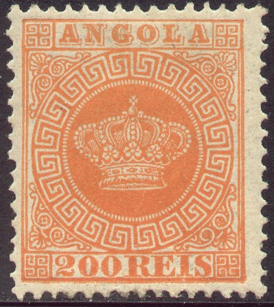
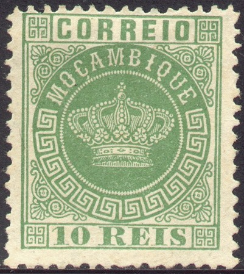
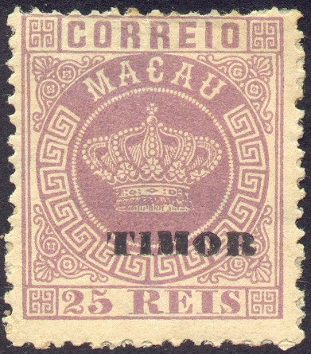

'Embossed issue (1886)'
Return To Catalogue - Portugal
Note: on my website many of the
pictures can not be seen! They are of course present in the
catalogue;
contact me if you want to purchase the catalogue.
Angola - Angra - Azores - Cape Verde - Funchal - Horta - Inhambane - Lorenzo Marques - Macao - Madeira - Mozambique - Mozambique Company - Nyassa (Portuguese Nyassaland) - Ponta Delgada - Portuguese Africa - Portuguese Congo - Portuguese Guinea - Portuguese India - Quelimane - St Thomas and Prince - Tete - Timor - Zambezia
Many Portuguese colonies issued their first stamps in the Crown design::
  
'Crown issue', click here for more details
However, Portuguese India issued a rather primitive design as its first stamps:
The second series to be issued was the 'Embossed issue (1886)' with the portrait of King Louis embossed
Simultaneously. a 'newspaper stamp and King Charles (Carlos) in an ellipse were issued for many colonies (1894):
In 1895 many stamps with King Charles I (Carlos I) in a circle were issued:
In 1898 a commemorative issue for Vasco da Gama was issued:


A design known as 'Ceres' was issued in the early 19th century for many Portuguese colonies:
So-called Pombal issue (special tax stamps, issued in 1925), three stamps together with three 'MULTA' stamps were issued for many Portuguese colonies (all same design, but different colour):

Many Portuguese colonies also issued Postage Due stamps in a uniformed design (first the values in 'REIS', later in 'CENTAVOS'):
1945 Postage due stamp (here for Portuguese India)


{kind=link}
{kind=link}
{kind=link}
{kind=link}
{kind=link}
{kind=link}
{kind=link}
{kind=link}
{kind=link}